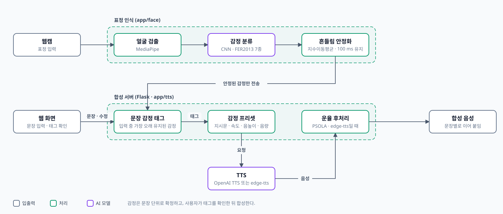

감정 기반 TTS 보컬 합성 시스템
표정으로 감정을 추정해 반영하는 TTS
Impact
- 표정으로 감정 태그웹캠 표정을 CNN이 감정 7종으로 분류문장이 끝나면 감정 태그가 자동으로 붙음
- 흔들림 안정화프레임마다 튀는 판정을 지수이동평균으로 누름100 ms 넘게 유지된 감정만 서버로 보냄
- 사용자가 확정자동으로 붙은 태그를 보고 고친 뒤 합성표정 판정이 틀려도 문장 감정은 사람이 정함
- 감정별 운율논문 이후 속도·음높이·음량 프리셋 추가PSOLA 후처리로 억양까지 조절
Background
감정 음성 합성은 보통 행복·슬픔 같은 태그를 미리 정해 넣습니다.
말하는 사람의 표정에 감정이 실시간으로 드러나는데도 쓰이지 않아, 표정으로 감정을 추정해 합성에 넘기는 방법을 제안했습니다.
Architecture

Contributions
표정에서 문장 태그까지
FER2013으로 학습한 CNN이 48×48 흑백 얼굴을 분류하고, 안정된 감정만 Flask 서버로 보냅니다.
문장이 끝나면 그동안 가장 오래 유지된 감정이 태그로 붙습니다.
Troubleshooting
감정이 목소리에 실리지 않았다
- 문제
- 감정을 바꿔도 합성 음성은 속도만 달라짐
- 원인
- 감정 지시문이 TTS 호출에 빠져 있었음
- 해결
- 지시문을 TTS에 넘기도록 고치고, 감정별 운율 프리셋과 PSOLA 후처리를 붙임
- 결과
- 감정마다 속도뿐 아니라 음높이·음량·억양이 달라짐. 사람 청취 평가는 아직 없음